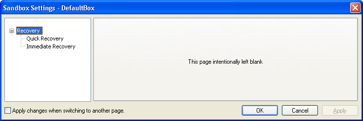
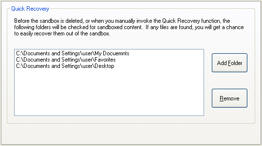
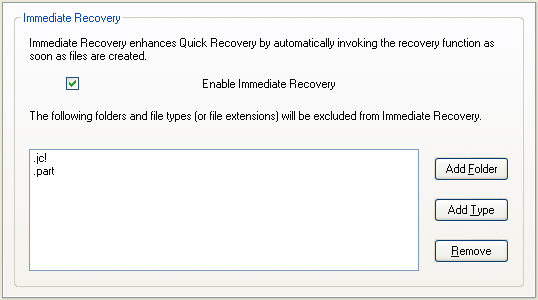

Recovery Settings
"Recovery" Settings Group
Sandboxie Control > Sandbox Settings > Recovery:

While you can manually explore the contents of the sandbox and extract the files you need, Sandboxie has a Quick Recovery tool that scans particular folders and informs you if any files are available for recovery out of the sandbox. The Recovery group configures this tool.
Quick Recovery
Sandboxie Control > Sandbox Settings > Recovery > Quick Recovery:

Use this settings page to add and remove folders that should be scanned by Sandboxie.
You can also influence this setting indirectly:
-
In Files And Folders View, by right-clicking on folder items and invoking the actions Add Folder to Quick Recovery or Remove Folder from Quick Recovery.
-
In the Delete Sandbox or Quick Recovery windows, by clicking the Add Folder button.
Related Sandboxie Ini setting: RecoverFolder.
Immediate Recovery
Sandboxie Control > Sandbox Settings > Recovery > Immediate Recovery:

The Quick Recovery tool scans folders only when invoked, which is either explicitly, or when the sandbox is about to be deleted. Immediate Recovery is an extension which notifies you about recoverable files as soon as they are created by a sandboxed program.
This behavior is usually useful and is enabled by default, but it may be disabled if so desired.
It may also be desirable to keep Immediate Recovery enabled, but exclude some file types from Immediate Recovery. For example: You may want to receive Immediate Recovery notifications about document files saved to the (sandboxed) desktop, but not about shortcuts (.LNK) files that may be created on the desktop during the installation of sandboxed programs.
Use this settings page to enable or disable the Immediate Recovery extension, and configure exclusions to Immediate Recovery.
Related Sandboxie Ini settings: AutoRecover, AutoRecoverIgnore.